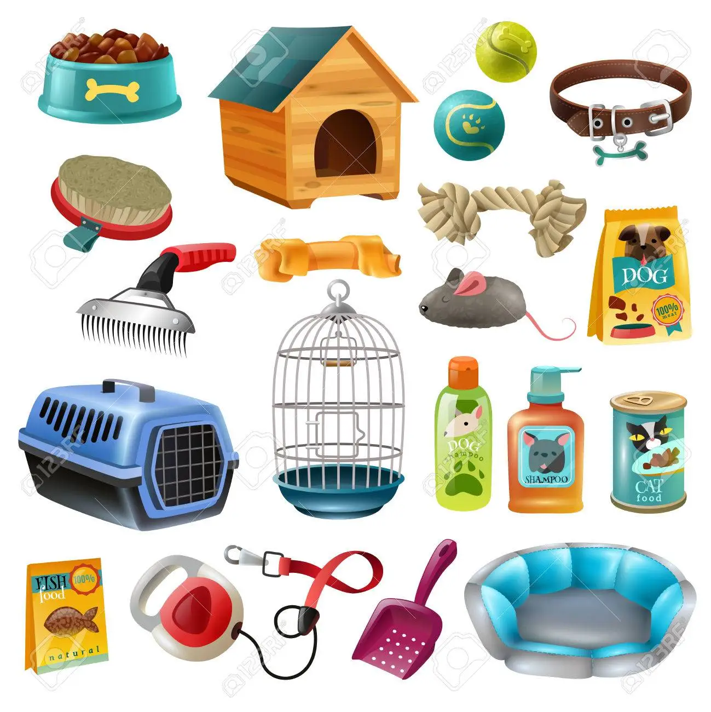

Que es una Forrajera?
Forrajería es una palabra utilizada para denominar a los establecimientos donde, primordialmente,
se distribuyen productos y alimentos para animales de cría, así como fertilizantes y pesticidas.
Forrajería, etimológicamente, viene de forraje, que es el alimento vegetal que se le da al ganado.
Con el correr del tiempo, estas tiendas han ampliado sus servicios, ya que han incluido la venta
de productos para animales domésticos y, en algunos casos, hasta servicios veterinarios.
Algunos especialistas indican que este es un sector rentable, a pesar de la competencia o de las
fluctuaciones de la economía, debido principalmente al interés del público por obtener los mejores
insumos para sus mascotas.
Origen
Forrajería es un modismo argentino que señala los locales de venta y distribución de alimentos para
animales domésticos y de cría.
En sus orígenes, la forrajería estuvo destinada a vender incluso huevos y carne, y en los pueblos fue
la principal actividad económica, ya que Argentina es un país productor de carne.
Hoy en día, las forrajerías han vuelto a ponerse de moda, y en cada barrio de cada pueblo rural y parte
de la ciudad ya se cuentan por miles de estos establecimientos, renovados y potenciados, con nuevos productos y servicios.
Productos de Forrajería
Inicialmente, las forrajerías eran centros de distribución y venta de alimentos para animales de cría, pesticidas y fertilizantes.
Incluso, también se incluía otros productos como huevos y carnes para el consumo humano.
Aunque algunos establecimientos mantienen este mismo modelo, la oferta de productos de las forrajerías se ha ampliado significativamente.
De hecho, se puede nombrar algunos ejemplos:
Alimentos para perros y gatos
Alimentos para otras especies
- Peces
- tortugas
- Pájaros
- Hámsters
- También puede encontrarse para animales exóticos pero depende del establecimiento.

Accesorios para animales domésticos
- Aletas
- Bebederos
- Jaulas
- Peceras
Accesorios para perros y gatos
- Bandejas
- Correas
- Juguetes
- Cadenas
- Ropa
- Comederos
- Linea cosmética
 Accesorios para animales de cría
Accesorios para animales de cría
- Herraduras
- Clavos
- Vendas
- Riendas
Alimentos para animales de gran tamaño
- Cubos de alfalfa
- Alimentos para conejos
- Aves (pollos, gallinas)
- Conejos
- Cerdos
- Terneros
- Bovinos
Otros productos
- Rollos de alfalfa
- Maíz molido
- Maíz entero
- Avena
- Sorgo
- Avena
- Semillas
Atención medica
-
Para animales pequeños y grandes, en este punto vale mencionar que dependerá de las licencias
y permisos que tenga el local.
En este caso si tienes cualquiera tipo de animal tanto exótico como domestico o de granja te pueden interesar las siguientes entradas que se encuentran
en el menú principal sobre lo tipos de forrajes y alimentos para tus animales así como ventajas y desventajas de algunos alimentos y la aportación de estos mismos.
Además puedes encontrar productos de una gran variedad de marcas de la mejor calidad así como elaborados por nosotros mismos en base a la necesidad de cada tipo de animal.
Solo dirigete a la parte de arriba donde encontraras los menús de estos temas.
|